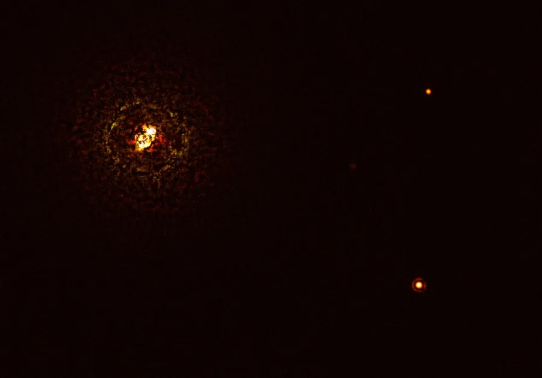

8. Dezember 2021
b Centauri b: Planet bei einem sehr massereichen und heißen Sternpaar
Mit dem Very Large Telescope der ESO wurde ein Planet beim Doppelstern b Centauri direkt abgebildet. Das Sternpaar hat mindestens sechs Sonnenmassen – bei der Bekanntgabe das massereichste und heißeste System, bei dem ein Planet nachgewiesen war. Zuvor kannte man keinen Planeten bei einem Stern mit mehr als drei Sonnenmassen.
Der Planet hat etwa zehn Jupitermassen und umkreist das Paar in der 100-fachen Entfernung Jupiters von der Sonne – eine der weitesten bekannten Bahnen. Das mit bloßem Auge sichtbare System liegt rund 325 Lichtjahre entfernt im Sternbild Zentaur.
Quelle: ESO: "ESO telescope images planet around most massive star pair to date.", 08.12.2021